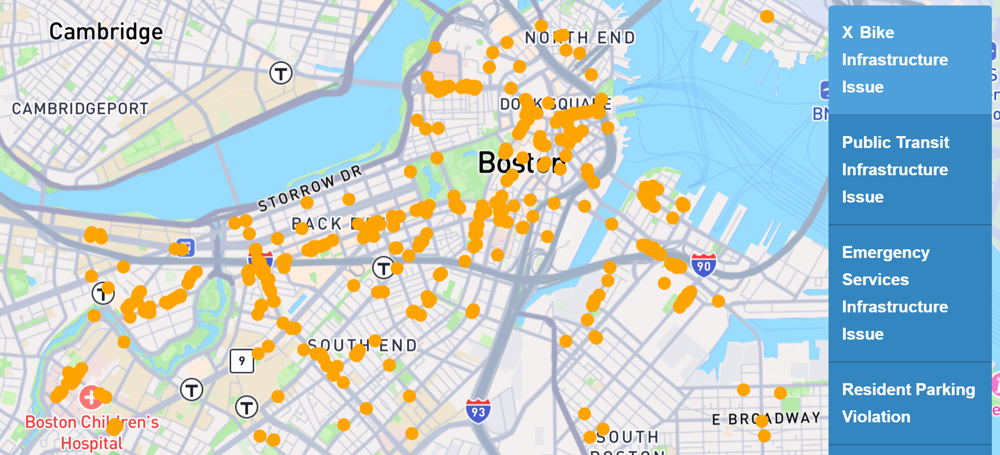
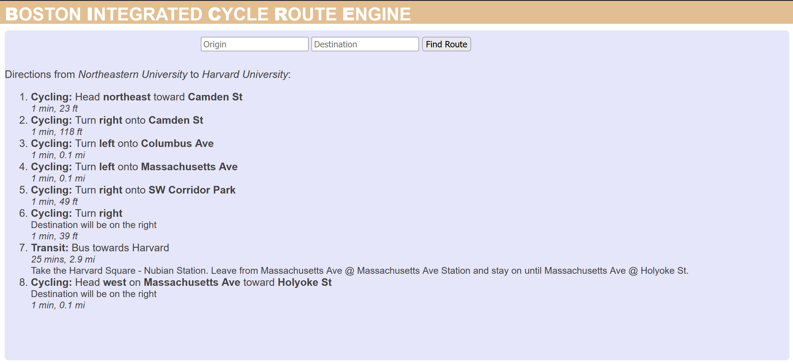
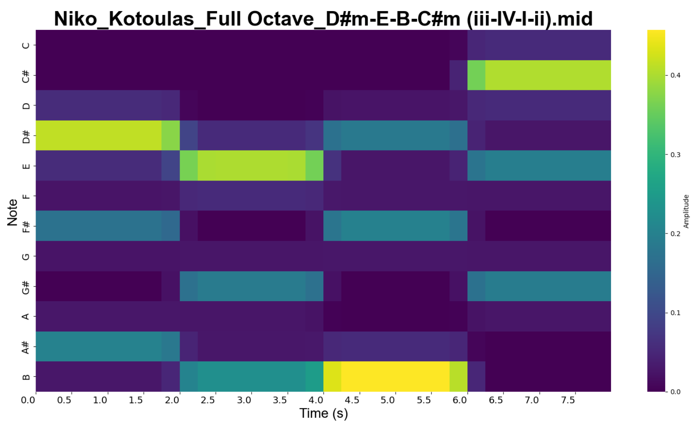

Below a selection of my personal and academic projects can be found.
311 Infrastructure Issue Identifier
The focus of this project is to utilize the vast amount of publicly accessible data to create a geospatial visualization of where pedestrian, bike, and public transit infrastructure encounters the most issues. This is accomplished by classifying Illegal Parking reports made to Boston 311. The main issue with these Illegal Parking reports is that this category encompasses everything from resident-only parking to blocked bus stops and bike lanes.
These Illegal Parking reports contain a free-form text description of the issue, from which classifications can be determined. Because of this, the project became a matter of Text Classification, a common task in Natural Language Processing. The first iterations of this project aimed to leverage word embeddings for text classification using the Lbl2Vec model. The report of this strategy can be read here. To summarize, despite promising metrics evaluating the word embeddings and clustering of documents, the actual utility of this iteration of the project was very low.
Following a review of this strategy with Professor Amir Tahmasebi, more effective strategies were devised, beginning with classical Machine Learning Text Classification strategies. Utilizing TF-IDF vectorization for word and document representation, various classification and clustering algorithms were tested such as K-means, HDBSCAN, AgglomerativeClustering, and FeatureAgglomeration. These strategies yielded less than useful results, with many algorithms making classifications along the lines of street names; and makes, models, or types of vehicles. To combat this, Feature Engineering was explored to amplify and massage the data to yield classifications along infrastructure types through masking and keyword amplification. Despite these efforts, classical Machine Learning strategies were not viable for this project.
Finally, a keyword-based classification with fuzzy matching was implemented for this project. The benefits of this strategy are that it mimics the strategy a human would take to make these classifications, it is agnostic to classification structures, and its simplicity means the time to classify large datasets (>25k documents) is low. Without fuzzy matching, this keyword-based classification was able to categorize ~65% of documents with extremely high accuracy (low false-positive rate is another benefit to this strategy).
The project repository contains JuPyter notebook files which collect the raw data from the Boston 311 API, classify the data, then process it for visualization, with the rest of the repository dedicated to the visualization of the data.
Interactive Map GitHub RepositoryBICRE: Boston Integrated Cycle Route Engine
The Boston Integrated Cycling Route Engine was created to address a problem I have encountered with using Google Maps for navigation. A key part of the Dutch transit system that I experienced was its intermodality. Many people used a combination of biking and transit to get them to and from their destinations. This is a great way to improve the utility of existing transit service, as it solves the issue of first and last mile legs of public transit trips. Due to the nature of public transit, it cannot take every user directly to their destination, but is usually combined with walking to achieve this. If all users walk to a transit station, the catchment area is considerably smaller than if users have the ability to utilize cycling.
Furthermore, much of the MBTA system is bike-friendly. Bikes are allowed on subways and commuter rail at most times except direct rush hours, and the vast majority of the MBTA’s fleet of buses have bike racks on the front available for riders to store their bikes on. A large pain point of combining cycling and transit is planning the route. Services like Google Maps lack the ability to create combined routes utilizing the two modes of transport. BICRE aims to solve this issue by enhancing the Google Maps service to create integrated cycling and transit routes between two places. More information about this project can be seen on the README of the GitHub repository.
Try BICRE GitHub RepositoryMBTA Slow-zones Data Analysis
This data analysis and visualization project focuses on the MBTA’s issues with speed restrictions and aims to investigate the impact of slow-zones on system ridership.
Analysis GitHub RepoROVE: Ridership Operations Visualization Engine
ROVE is a tool developed by the MIT Transit Lab for performance analysis of bus transit systems. It uses General Transit Feed Specification (GTFS) data to create interactive visualizations to support the analysis of the effectiveness of bus transit services. The original paper was sent to me by Jeff Rosenblum while I was abroad in the Netherlands studying Sustainable Urban Development and Transportation. Because of my recent experiences both studying and using Dutch bus systems in The Hague, Amsterdam, and Rotterdam, I wanted to compare the data provided by OV (Openbaar Vervoer, Dutch transit authority) to the example systems provided by ROVE (MTA, MBTA, etc.). However, the OV GTFS data was not compatible with the ROVE system.
I endeavored to make slight modifications to the ROVE system to assuage the issues between it and the OV GTFS data. This was my first project in Python, and it was a great introduction to Pythonic development and debugging.
GitHub RepositoryChord Recognition and Progression Predictor
Using an ensemble approach for chord recognition followed by a Hidden Markov Model for chord prediction, this project applies key AI concepts to music and sound data to create an entertaining model to interpret and predict chord progressions.
Report GitHub Repository